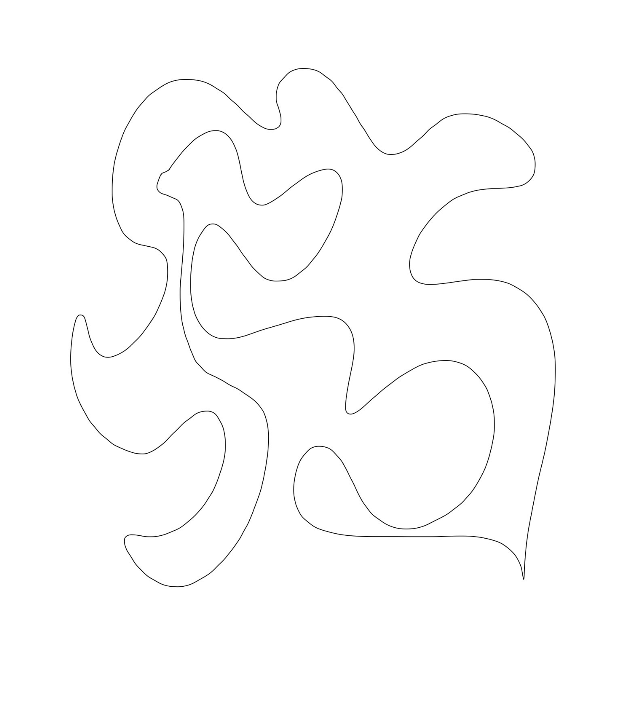
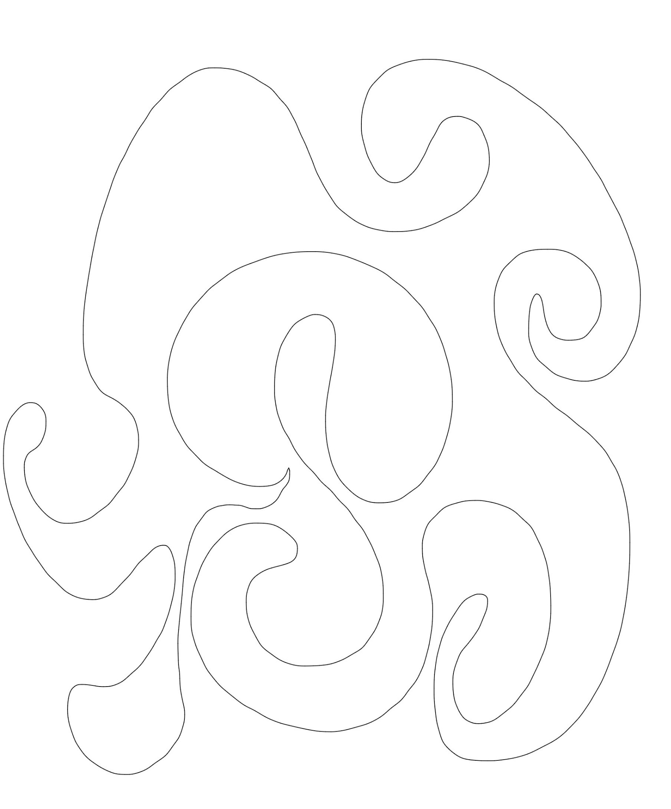
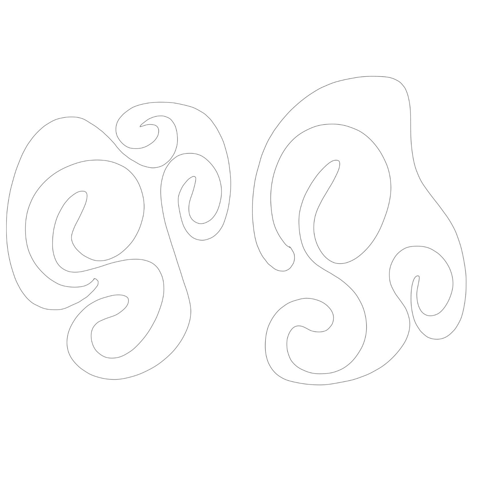
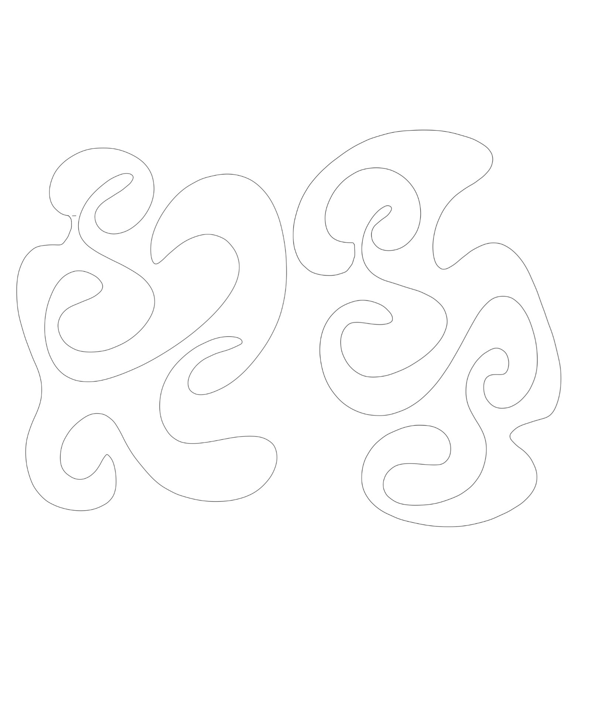
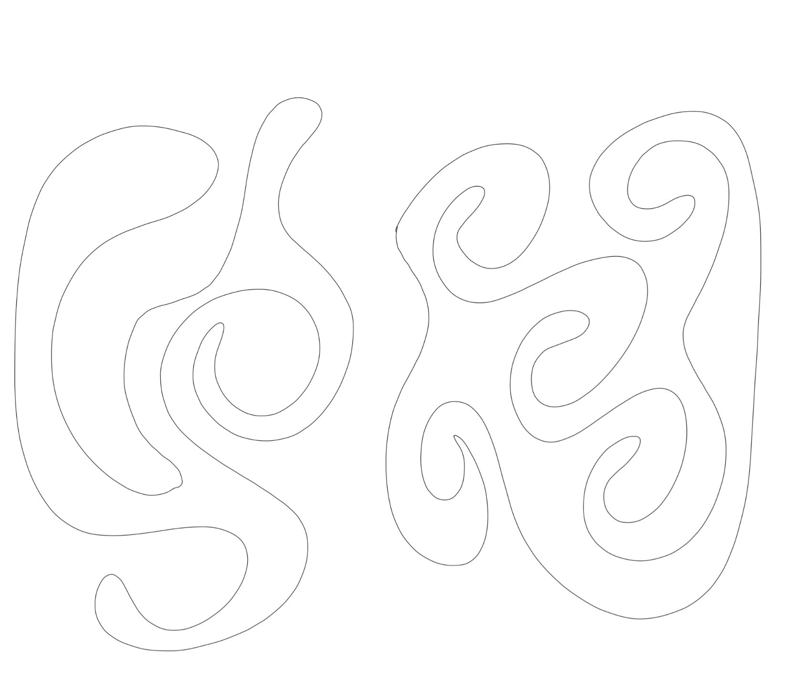
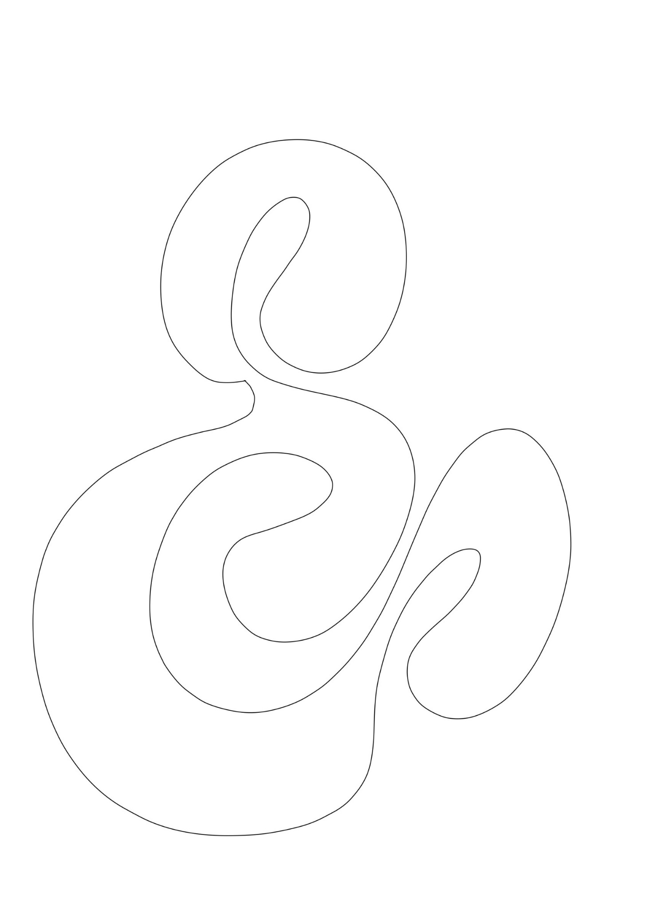
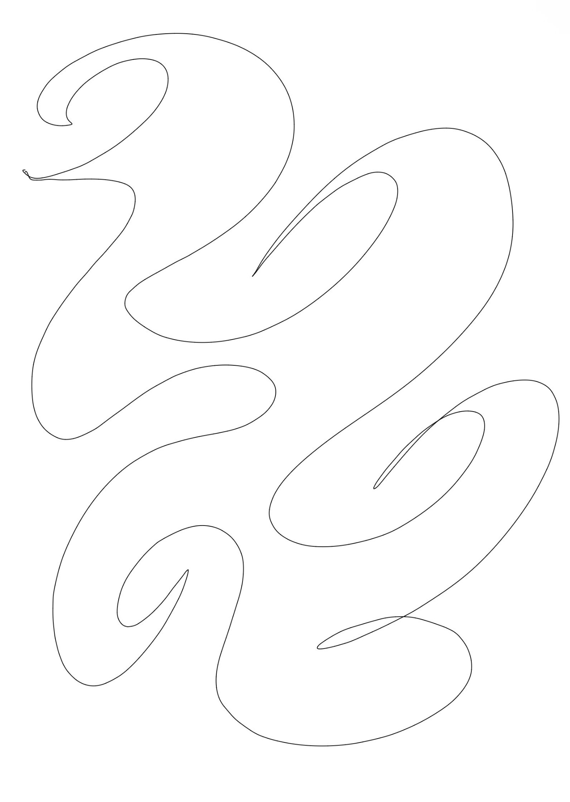
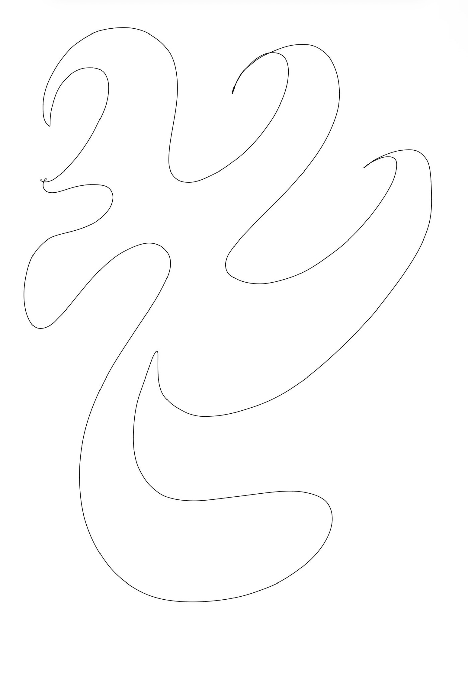

Work No. 01
Atom
A field of wandering lines gathers into a single restless form—an intimate map of emotion, movement and inner density.

Selected digital works · Vol. I
An inquiry into feeling through line, repetition, stillness and movement.
Work No. 01
A field of wandering lines gathers into a single restless form—an intimate map of emotion, movement and inner density.
Work No. 02
Repeating lines circle, overlap and drift without resolution, reflecting the continuous movement of thought.
Works No. 03—10
Project · Eight works
This series investigates variation within a fixed visual language. While each piece shares a common structural foundation, subtle departures in form and expression mark distinct emotional and psychological states. The collection considers how repetition can function as a record of change. Rather than presenting singular conclusions, the works remain open-ended, reflecting moments of tension, uncertainty, reflection, and transformation. Viewed collectively, the series forms an extended study of emotional continuity and evolution over time.








Cael Khin explores the shapes that feeling leaves behind.
Working across digital drawing and motion, the practice reduces emotion to its quietest elements: line, rhythm, space and repetition.